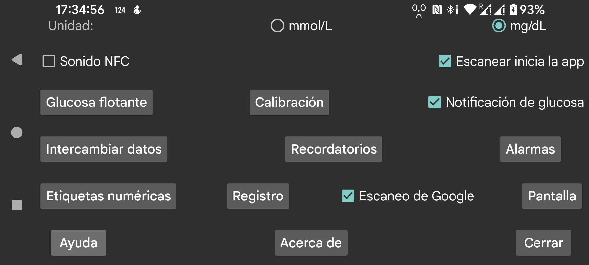

be de es fr it nl pl pt ru tr uk zh en
Selecciona si los valores de glucosa deben mostrarse en mmol/L o en mg/dL.
Emite un sonido durante el escaneo, además de la vibración.
Si esta opción está activada, la app se iniciará cuando escanees un sensor por NFC, aunque Juggluco no esté visible. Si varias apps tienen activado este comportamiento, Android mostrará un selector para elegir qué app quieres usar. En la práctica, a veces elegir una no funciona y tampoco sirve marcarla para usarla la próxima vez. En ese caso no podrás escanear sin una app en primer plano. Si desactivas esta opción en Juggluco, al menos puede ser posible que otra app sí se active de esta forma.
Si tienes acceso root, también puedes desactivar la activación por NFC de la app LibreLink de Abbott (no funciona con Libre 3). Hazte root en adb shell o termux y escribe:
pm disable com.freestylelibre.app.nl/com.librelink.app.ui.common.NFCScanActivity
En LibreLink 2.7.1 y versiones anteriores había que usar:
pm disable com.freestylelibre.app.nl/com.librelink.app.ui.common.ScanSensorActivity
Aquí com.freestylelibre.app.nl es la versión neerlandesa de LibreLink; debes sustituirla por la versión que uses. Puedes averiguar su nombre escribiendo, incluso sin root:
pm list package freestylelibre
Después seguirás pudiendo usar LibreLink para escanear cuando esté en primer plano, pero ya no se iniciará automáticamente. LibreLink 2.5.2 y posteriores se cierran si detectan root. En Magisk se puede ocultar el root cambiando el nombre de Magisk y añadiendo apps a la denylist o a MagiskHide. También deberías añadir Juggluco a esa lista. Salvo cuando uses sensores FreeStyle Libre 2 de EE. UU., también puedes usar una versión más antigua de LibreLink sin comprobación de root.
Sin root, desde adb shell, también puedes desactivar toda la app con:
pm disable-user --user 0 com.freestylelibre.app.nl
Antes de llamar al servicio de atención de Abbott, puedes volver a activarla con:
pm enable com.freestylelibre.app.nl
Antes se llamaba Glucosa en la barra de estado de Android. Si está activada, los valores de glucosa que llegan por Bluetooth se muestran discretamente en una notificación y en la barra de estado de Android. Si la desactivas, en vez de un número se muestra un punto, y la notificación no dirá más que Conectar con sensor o Intercambiar datos. Android obliga a que una app que permanece funcionando en segundo plano tenga una notificación visible; de lo contrario la detiene con facilidad. Juggluco solo desactiva la notificación cuando Sensor por Bluetooth está desactivado y no hay conexiones de Clon.
En algunos teléfonos, el valor de glucosa solo se muestra en la barra de estado de Android después de cambiar también los ajustes de notificaciones de Android. En un Realme GT 5G, por ejemplo, tienes que ir a lista de apps → Juggluco → gestionar notificaciones, tocar glucoseNotification y desactivar Set to Silent. Entonces aparecerá activado Mostrar en la barra de estado.
También puedes recibir una notificación de Android seleccionando Notificar en el menú central izquierdo. En ese caso la notificación puede enviarse a algunos relojes inteligentes, si están configurados para ello. Esto funciona con relojes Garmin; no sé si funciona con otros. Las alarmas también generan notificaciones.
Cuando activas esta opción, aparece constantemente en la pantalla una pequeña imagen con el valor actual de glucosa, independientemente de qué app esté en primer plano. La primera vez que la actives, Android te llevará a una lista de apps donde debes conceder a Juggluco permiso para mostrarse sobre otras apps.
Configura las alarmas de glucosa alta y baja, la alarma por pérdida de señal y la notificación de valor disponible.
Especifica las etiquetas que se usan para las cantidades. Aquí eliges qué etiquetas quieres usar para introducir cantidades, como dosis de insulina, consumo de carbohidratos y horas jugando al fútbol. Si también usas la app de reloj Garmin Kerfstok, estas etiquetas se envían a la app del reloj.
Diferentes formas de enviar datos de Juggluco a otras apps o servidores. Para enviar datos a relojes, ve a menú izquierdo → Reloj.
Permite indicar que debe sonar una alarma si no has introducido cierta cantidad de comida o medicación dentro de un determinado intervalo de tiempo.
Escanea la matriz de datos de los envases de sensores Sibionics y de los aplicadores Dexcom G7/ONE+, así como el código QR del menú central izquierdo → Clon, con el escáner de códigos de Google. Si esta opción está desactivada, se usa zXing. En la mayoría de los dispositivos el escaneo de Google funciona mejor, pero a veces no funciona. Cuando falla con un error, siempre se usa zXing, pero a veces el escaneo de Google simplemente no funciona sin devolver un error.
Todo tipo de ajustes relacionados con la forma en que se muestran los datos, desde el rango objetivo hasta el idioma.